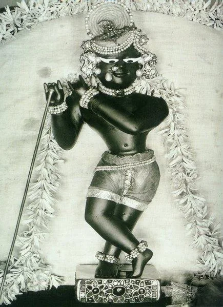
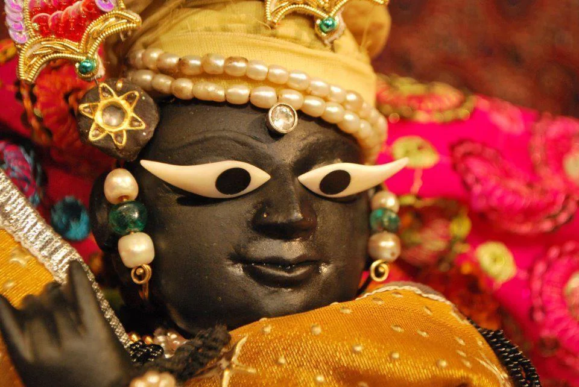

My First Day with Shri Radharaman
As a teenager, I had a lot of worldly dreams, but I chose my goals as per my father’s wishes. In 1998, he time had arrived when he asked me to join him on the altar for the first time. I was incredibly nervous at the thought of becoming the youngest Goswami to serve Radharamanji. My father was guiding me at every moment. First, I took a bath and then I wore a new thread ( janehu ), followed by a pink dhoti (traditional lower garment) and a duppatta (shawl). I felt so much bliss within me on this momentous day; finally, I would be able to touch the lotus feet of Shri Radharamanji and take part in His service!

I left home with my helpers and headed towards the temple. My Guru Maharaj was waiting for me at the altar. He said, “Chandan, wash your feet because you came here barefoot, then wash your hands because you touched doors and walls and finally, rinse your mouth clean.” I followed him and sat down in front of him. Now the learning would begin. He marked my body with
gopi chandan tilak
. Then he covered my head with a
gamsha
(the Indian equivalent of a towel) and instructed me to touch his left toe with my right hand and his right toe with my left hand. These were customs for initiation.
The Radharaman Goswamis receive two initiations, the first one during the Upnayan ritual and the second one on the first day we serve Radharamanji. So, I took my second initiation and my Guru Mantra, and after I made offerings to my Guru, I was asked to do shastang pranaam (pay obeisances with my entire body) to Shri Radharamanji. I was instructed to enter the Deity room with my right foot first. In the presence of four Goswamis and my Guru Maharaj, I took my first step into the Deity room! The electricity had gone, as it often does in Vrindavan, so candles were lit. Oh my! My Beloved was in front of me. Incredible! My heartbeats were racing as fast as a missile taking off. But I was feeling strange. The Deity room was very dirty and it made me somewhat sad to think that my Radharamanji was living like this. All of the Goswamis did not waste any time in instructing me left, right and centre, but my mood was down. Yet I was enjoying and absorbing Radharamanji close up, like I had never been able to before. This was a very blessed experience and one that cannot be captured by words.
I had to wash my hands in His room again. Once we are inside, we are not allowed to touch anything outside. If we come outside from the Deity room and touch even the deity room gate or curtains, we are to wash our hands, as per the rules of serving Shriji.
When I was asked to perform the morning Srngaar Aarti , my whole body was shaking! I had no idea of how I would perform the aarti in front of hundreds of devotees. What if I make a mistake? Everyone will laugh at me . I remember regretting how I cared more about what the devotees would think instead of giving my one-pointedness to Shri Radharamanji, and pleasing Him with my body, mind and actions.
I was feeling awkward at the altar. Five Goswamis were instructing me on how I should do the aarti and as I tried to absorb it all, my attention drifted from my Beloved. I had to compose myself for the aarti ritual. As the temple bells started to ring, the curtains opened and the aarti started. Yet I could not get myself out of this melancholic mood somehow. I held the bell with my left hand and aarti lamp was in my right hand. When I started concentrating on waving the lamp around Radharamanji, I was not able to coordinate the bell ringing, and when I was concentrating on the bell, my aarti lamp was not moving. I was confused, but unable to do anything about this; my legs were shaking like anything! Heartbeats were racing, bell and aarti were out of sync and the five Goswamis were not leaving me alone. All of these instructions and expectations of being perfect on my first day only increased my anxiety.
The aarti was over and once again, the Goswamis continued to show me everything inside the Deity room. In my head, I was thinking, “Why can’t they just go easy on me on my first day? I am young and I cannot learn everything on the very first day!”
At long last, it was time for Radharamanji to take His lavish lunch ( Rajbhog ) with His beloved Shri Radha. This was the perfect opportunity for me to recover from what just happened, though I was not sure how I would. I had to compose myself. I started to meditate on His lotus feet and how He appeared to me on this special day. My life seriously changed today and would never be the same again. I started to chant my Guru Mantra, and without much effort, my mood lifted. Love and inspiration began to blossom inside me. I felt a new surge of energy to perform His last aarti of the morning ( Rajbhog Aarti ) before the Temple closed at Midday. Now Radharamanji was sitting with Shri Priyaju. Chanting my Guru Mantra whilst Looking at His beautiful lotus face, I started the aarti . I noticed a very mystical smile on His lotus face. My full concentration was on Him. And magically, the bell and aarti lamp were moving together. Everyone was in bliss and the elders were pleasantly surprised that a new and young Goswami performed such a serene aarti .

I also realised I was not shaking anymore. How did I manage to do the aarti ? In all the confusion, I looked at Radharamanji, and came to know the meaning of His suspicious smile. O Radharaman! That day I became fully aware of the power of Guru Mantra and Your power. I have only gratitude that You allowed me to serve You at such a young age. Only Your blessings can protect me in every instance. I love You. You are my very Life. Jai Radharaman!